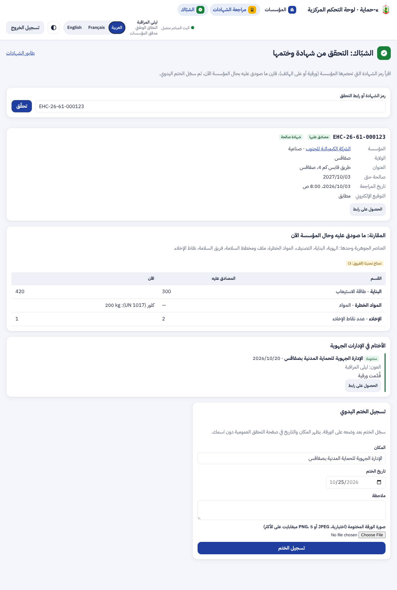
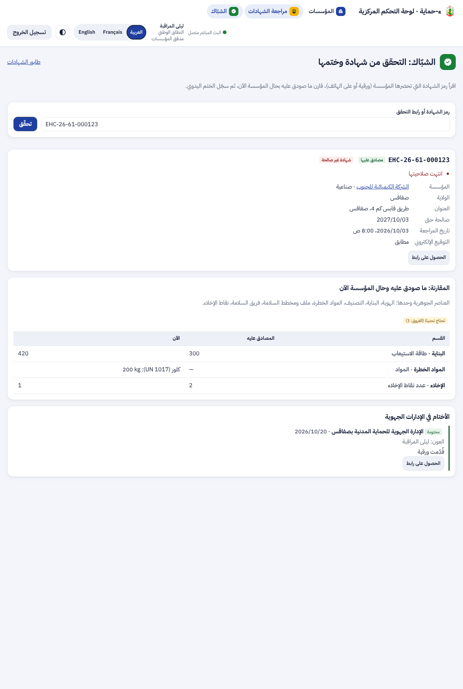
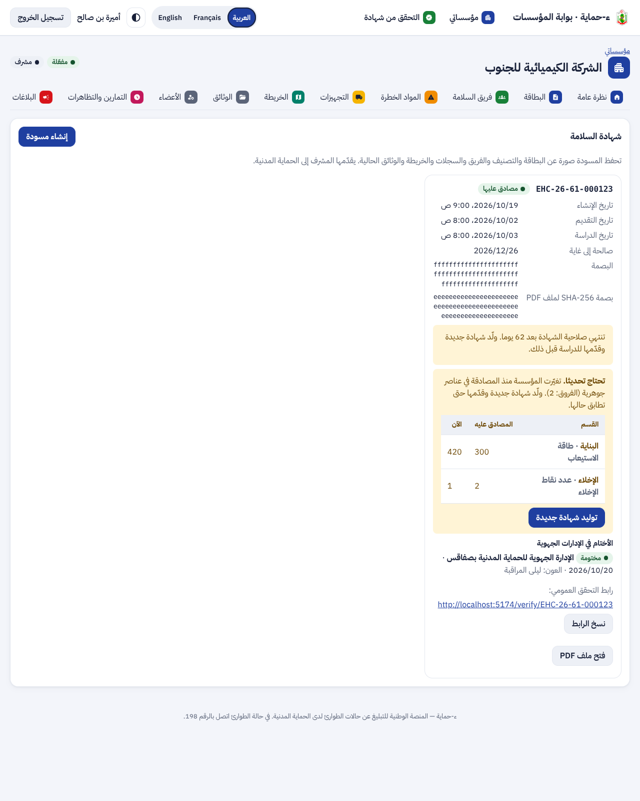
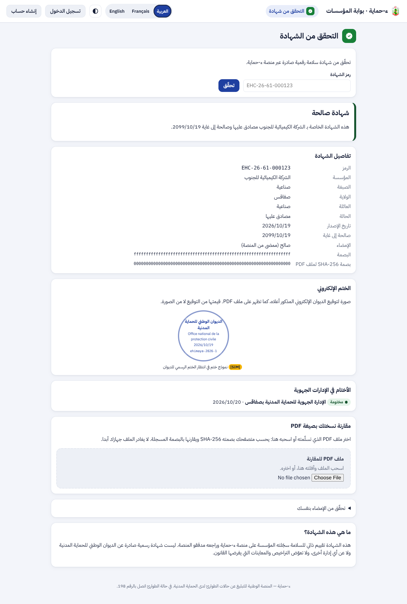
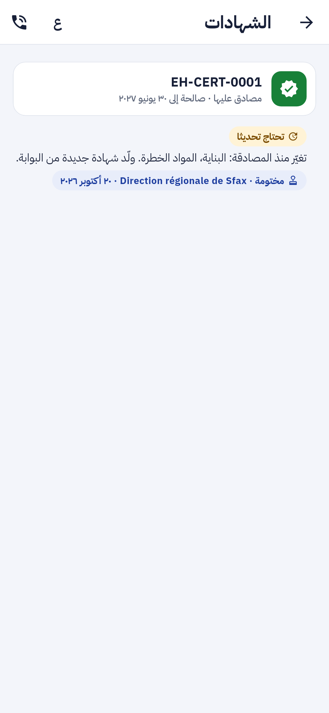
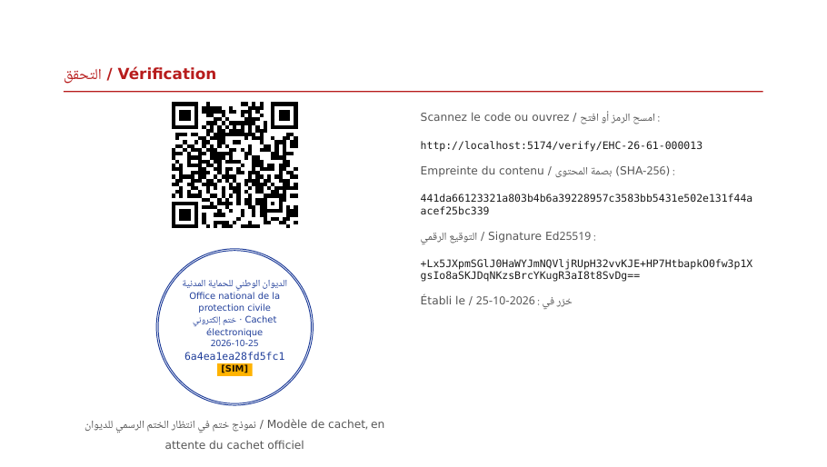

تقرير المرحلة P3a: تطوير الشهادة (الجزء الأول من «الشهادات والنفاذ»). الختم الإلكتروني للديوان، التحقق والختم اليدوي في شبّاك الإدارة الجهوية، التذكير بالتجديد، و«تحتاج تحديثاً» عند تغيير جوهري
لوحة القيادة: الشبّاك بشهادة صالحة تحتاج تحديثاً، ثم شهادة منتهية لا تقبل الختم. البيانات في اللقطات وهمية [SIM].


البوابة: تبويب الشهادة بالتذكير و«تحتاج تحديثاً» والأختام، وصفحة التحقق العمومية بالختم الإلكتروني [SIM] وأماكن الختم.


التطبيق وملف PDF:


| الجزء | ما أُنجز | التقدم |
|---|---|---|
| الخادم | الترحيل 0046، 4 عمليات جديدة، الختم في PDF، المقارنة الحيّة، التنبيهات الثلاثة، رسائل التذكير اليومية | 100% |
| لوحة القيادة | صفحة «الشبّاك» (قراءة، مسح، مقارنة، ختم بصورة)، الأختام و«تحتاج تحديثاً» في صفحة المؤسسة، زر من طابور الشهادات | 100% |
| البوابة | التذكير و«تحتاج تحديثاً» مع الفروق وزر «توليد شهادة جديدة»، الأختام، الختم الإلكتروني في صفحة التحقق | 100% |
| التطبيق | 0.13.0: شارة «تحتاج تحديثاً» بالأقسام، الأختام، نصوص التنبيهات الثلاثة | 100% |
تقدم P3a: 100%. تقدم P3 كله: حوالي 40% (يبقى P3b شهادة الوقاية و P3c النفاذ).
| العملية | من يستعملها |
|---|---|
GET /staff/certificates/lookup?code= | اللوحة: من يقرأ المؤسسات في نطاقه |
POST /staff/certificates/{id}/stamps | اللوحة: مراقب المؤسسات |
PUT · GET /staff/certificates/{id}/stamps/{sid}/photo | اللوحة |
وتوسّعت الأجوبة الموجودة: الشهادة بـ needs_update و changes و stamps، والصفحة العمومية بالأختام (المكان والتاريخ فقط)، والتنبيه بثلاثة أنواع.
| الطبقة | جديدة في P3a | المجموع الآن |
|---|---|---|
| الخادم (pytest) | 4: العناصر الجوهرية وحدها، «تحتاج تحديثاً» حيث تُقرأ المؤسسة، تنبيهات الانتهاء ورسائل التذكير دون تكرار، الشبّاك والختم والصورة والنطاق | 844 |
| لوحة القيادة (vitest) | 8: قراءة الرمز والرابط، صورة الختم، الرمز الخاطئ، الصلاحية والمقارنة والأختام، الأسباب دون ختم، الختم بالصورة، رفض المكان الفارغ والنوع الخاطئ، الأختام في صفحة المؤسسة | 451 |
| البوابة (vitest) | 3: التذكير و«تحتاج تحديثاً» والأختام وتوليد شهادة جديدة، الشهادة المطابقة، الختم الإلكتروني والأختام دون اسم العون | 100 |
| التطبيق (flutter test) | 1 جديد ومسار موسّع: قراءة الحقول الجديدة، والشارة والأقسام والختم في قسم الشهادات | 426 |
الترحيل 0046 جُرّب صعوداً ونزولاً. فحص النفاذ axe (WCAG 2.2 AA) أُضيف لصفحة الشبّاك ولصفحتَي البوابة بمحتواهما الجديد، بلا مخالفة. التحليل الثابت نظيف: ruff و mypy، eslint و tsc، flutter analyze. ملف OpenAPI ومخطط قاعدة البيانات وجدول التتبع محدّثة.
لا حزمة جديدة. الختم يُرسم في قالب HTML الشهادة الموجود (WeasyPrint)، والمسح بالكاميرا بواجهة BarcodeDetector المدمجة في المتصفح. القائمة الكاملة في versions.md.
0.13.0 (البناء 12) · Flutter 3.47.7 · 1
flutter build apkAlembic · 0046 · 1
cd services/api && uv run alembic upgrade headمدمج في Chrome و Edge · 3
spec/: F-POR-07 منجز، F-DSH-34 جزئي، خارطة الطريق بـ P3a و P3b و P3c.diagrams/: حالات استعمال المؤسسة (الشبّاك والختم والتذكير والتحديث)، صنف «الختم اليدوي»، ومخطط تسلسل جديد للشبّاك.presentation/.P3b: شهادة الوقاية (الطلب أو الزيارة، التفقد، تقرير المقارنة، القرار بالتحفظات وآجالها) وقسم التقارير في التطبيق. ينتظر من الديوان نص شهادة الوقاية ومدة صلاحيتها، والختم الرسمي.